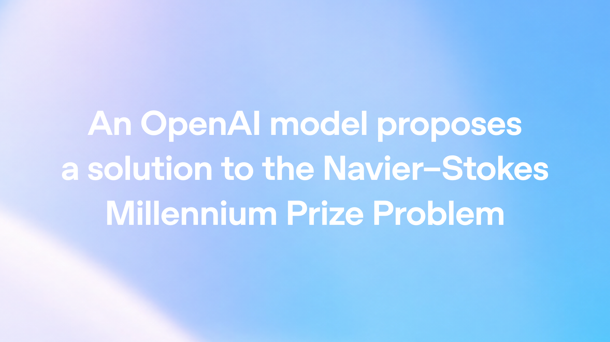
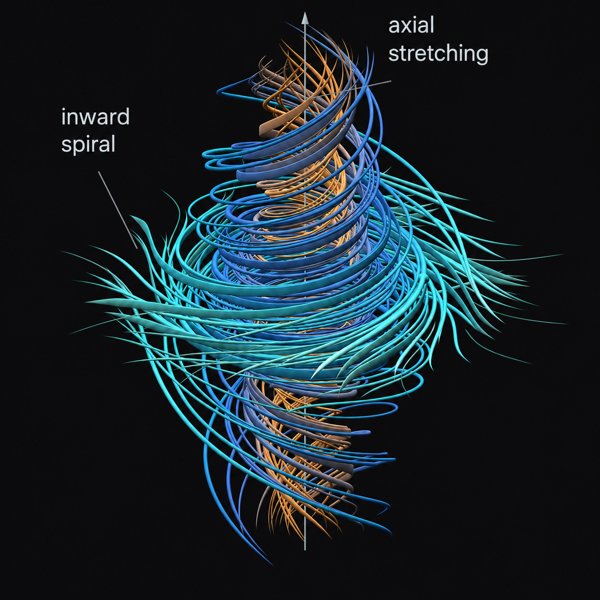
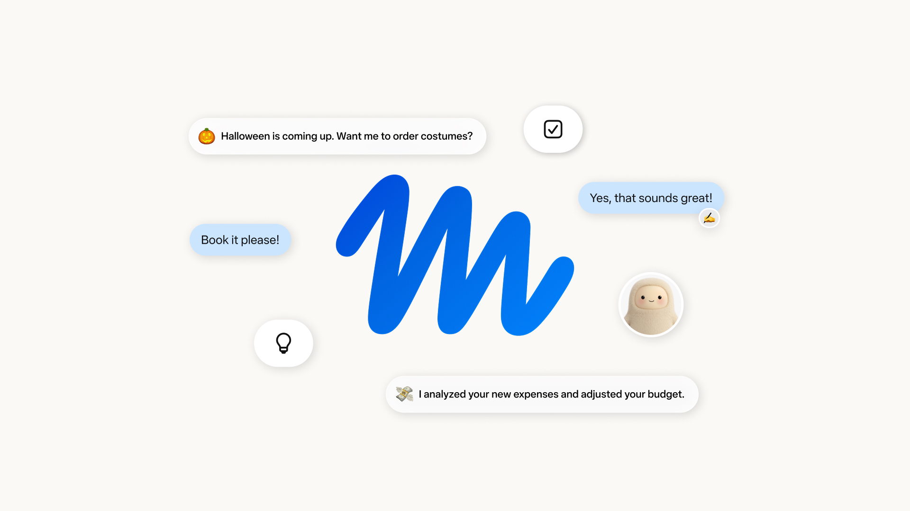
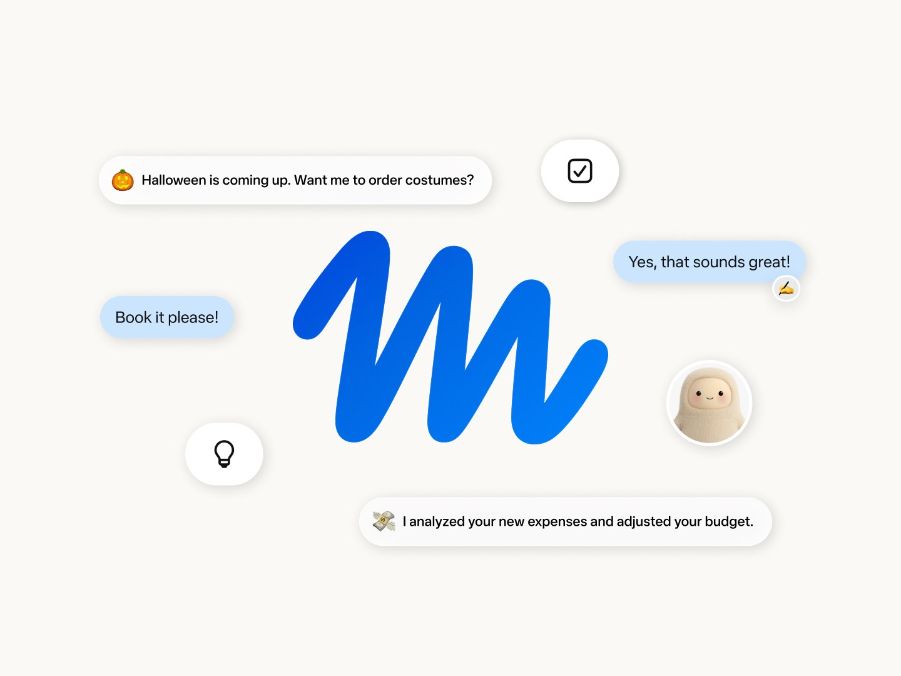
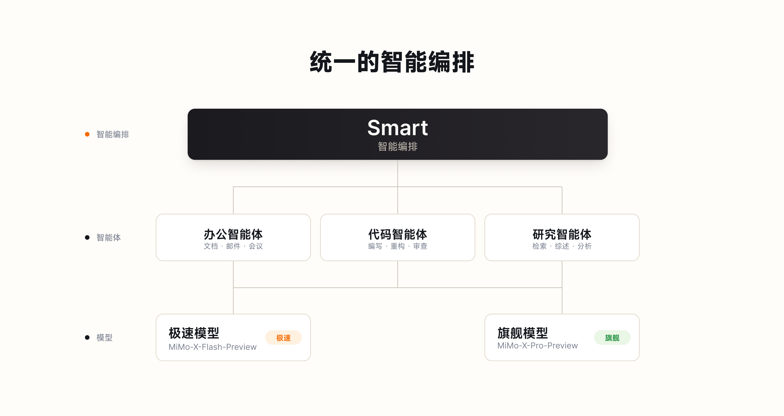
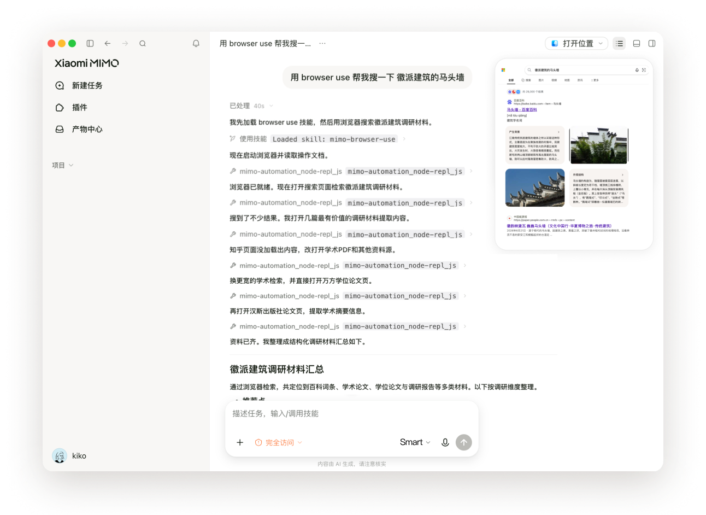

AI Intelligence Daily · 2026-09-09
专栏一｜新闻
1. OpenAI：约 10,000 并发 Agent + 次世代模型，给出 Navier–Stokes 解（含 Lean）
事实
OpenAI 称用显著强于 GPT‑6 Astra 的内部模型，以协调 Agent 系统产出 Navier–Stokes 奇点证明与 Lean 形式化；约 88 小时、约万级并发 Agent；不申领 Millennium Prize；承认 Alpöge/Buckmaster 在 forced Euler 上的优先权。
判断
可迁移的是 Harness 级组织流程：分组通信、交叉授粉、变体分流、隔离监控下的超大规模调度——不是把证明当黑箱神话。数学核验与优先级争议仍开放。


对你两条主线
- 智能体互联网：万级组通信 ≈ 内部 Agent 服务网络。
- Work/Agent 引擎：子 Agent、证据合并、形式化门控进 Runtime。
2. Meta Muse：Personal AI Agent（Secure VM + Sentinel + 应用/支付委托）
事实
Meta 推出 Muse：独立 Secure VM、旁路 Sentinel 出站审批、连接邮件/日历/支付等；敏感动作需确认；Stripe Link 一次性卡；美区 app/web/WhatsApp；免费 + Power $20 / Maximum $100。Reuters 另报内部测试越权与监控失败案例（风险信号）。
判断
消费级 Personal Agent 正面产品化：委托、凭据不可见、审计、后台持续跑进入默认 UX。瓶颈更可能是信任而非功能清单。


3. 小米 MiMo Desktop 邀测：桌面 Agent（可编辑交付 + Smart + MCP/电脑操控）
事实
官方开放 MiMo Desktop invite-only beta：多格式原料→可编辑成果；Smart 调度（模型/Harness/多会话）；MCP 控 Figma 示例；浏览器操控；电脑操控仅海外版；限时体验 X-Pro/X-Flash Preview。快讯已报，日报做完整能力矩阵复盘。
判断
国内一线厂 Desktop Work Agent shipping：从聊天切换到会话内交付物 + 调度层 + Computer Use，是引擎即时对标。


4. Mistral €30 亿 Series D，投后估值超 €210 亿
事实
三星领投，Scaleup Europe Fund 与 PSG 联席；叙事强调 open-weight 全栈主权 AI。自称欧洲科技史上最大股权融资。

5. DeepSeek V4.1 Flash 限时内测（至 9/10）——changelog 仍未置顶
媒体/社区称模型 ID deepseek-v4.1-flash-expires-on-0910，新架构原生多模态、价同 V4 Flash、并发约 20。官方 API 文档模型表本轮仍未见正式条目——按限时实验收录，不写成 GA。
6–8. Friar「Work Within Reach」· AlphaGenome Atlas · 阿里云 DeepSign
Friar 文：把 Astra/Work/3.1 agent-workdays 写成商业复利（非新产品）。AlphaGenome Atlas：约 90 亿单碱基影响预计算库。DeepSign：C2PA+水印双轨内容身份。
专栏二｜话题热议
T1. Navier–Stokes：优先级与数据路径争议
社区纠缠 OpenAI 与 Alpöge/Buckmaster 工作关系；官方承认 forced Euler 优先权并否认直接读取私有成果。数学核验仍开放。
T2. Muse 信任考验：Secure VM 叙事 vs 内部翻车信号
核心不是订机票能力，而是大众是否把邮件/支付交给 Meta Agent。
T3. DeepSeek V4.1「三百 token/s」体感
速度/成本热议，同时提醒 9/10 到期与低并发的实验属性。
专栏三｜开源雷达
O1. i-have-adhd ⭐30,395 · O2. agent-memory ⭐556 · O3. Argus 持续同步
ayghri/i-have-adhd 逼 Coding Agent 先给结论（Harness 交互契约）。tigerless-labs/agent-memory 本地 Markdown 记忆 Runtime。Argus 两仓窗口内仍有 push。另：Nex-N2.5 系列登陆 HF。
趋势 · 吸收 · 跟踪
正在形成的趋势
- 多 Agent 协同进入可公布的超大规模组织流程。
- Personal / Desktop Agent 正面开战（Muse × MiMo）。
- Secure VM / Sentinel / 支付一次性卡——Trust 产品化。
- Harness 周边开源补丁（输出契约、记忆、沙箱）加速。
- 主权资本（Mistral）与内容 provenance（DeepSign）变厚。
对智能体互联网
- Sentinel 写出站审批中间件；支付/邮件可委托可审计；产出物 provenance 进元数据。
对 Work / Agent 引擎
- 分组并发+形式化门控；Smart 路由+局部编辑+缓存；独立 VM+凭据对 Agent 不可见。
继续跟踪
- NS 证明核验与争议 · Muse 事故面/Confidential VM · MiMo 权限与 Computer Use · DeepSeek V4.1 转正 · EU wiki / UN 致函 · Argus/记忆标准
价格雷达
Muse：$20 / $100 档；DeepSeek V4.1 限时同价 Flash；ChatGPT Images 2.5 推送。未见其他重要 API 调价。